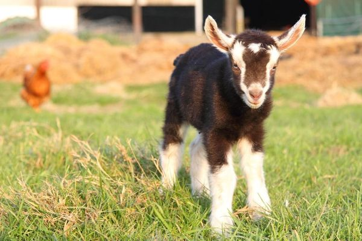
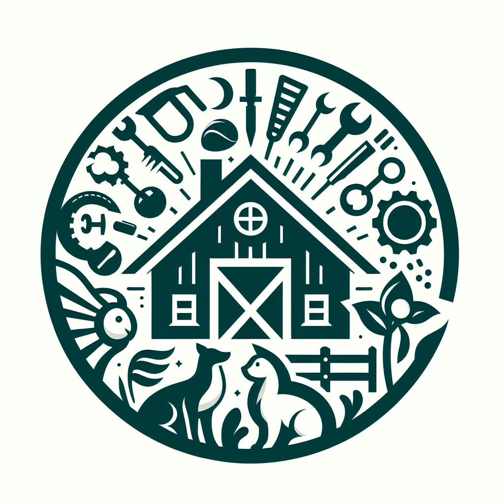

Le projet
Transformez la santé de vos animaux : surveillance, analyse, géolocalisation. Tout-en-un, tout simplement.

Notre initiative se concentre sur la création d'une puce sous-cutanée révolutionnaire dédiée à la surveillance de la santé des animaux de la ferme. Cette puce embarque des fonctionnalités avancées, comme l'analyse sanguine en temps réel, la géolocalisation et la surveillance visuelle du comportement. En offrant une solution holistique, elle va au-delà des dispositifs de suivi conventionnels, ouvrant ainsi de nouvelles perspectives pour le bien-être et la gestion efficace du bétail.
Transformez la santé de vos animaux : surveillance, analyse, géolocalisation. Tout-en-un, tout simplement.

Rencontrez l'équipe qui travaille sur ce projet.

Les ressources utilisées pour ce projet.